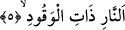

Yukardan beri anlattığımız olay Peygamber Efendimiz’in dünyaya gelmesinden doksan
yıl önce olmuştu.
Yukarda zikredilen hadis, bize evliyânın kerametleri olduğunu isbat etmektedir. Ayrıca
bu hadisten insanın ölüm korkusu taşıması durumunda yalan söylemesinin câiz olduğu
hükmünü çıkarıyoruz. Helak olmakla yüzyüze gelen kimse ister o yalanı söyleyen kişi
olsun, isterse başkası olsun farketmez.
Rivâyet olunur ki Hz. Ömer döneminde çukurun biri kazılır. Orada kralın katletmiş
olduğu çocuğun cesedini bulurlar. Çocuğun parmağı, katledildiğinde yaptığı üzere
şakağında olduğu gibi durmaktadır.
Bazı tefsirlerde yazdığına göre insanlar yukarda adı geçen Abdullah b. Samir’in
cesedini bulurlar. Onun da aynı şekilde -katledildiği gün koyduğu üzere- parmağı
şakağında durmaktadır. Eli şakağından uzaklaştırılınca kafasından kan gelmeye başlar.
Parmağını eski hâline bıraktıklarında kan kesilir. Parmağında demirden yapılmış bir
yüzük bulurlar. Yüzüğün üzerinde: “Rabbî Allah/Rabbim Allah’tır” yazılıdır. Bunun
üzerine Hz. Ömer’e mektup yazarlar. Mektupta bu cesedi ne yapacaklarını sorarlar. Hz.
Ömer onlara bir mektup göndererek cesedi tekrar toprağa gömmelerini ve toprağa iâde
etmelerini yazar.
Bazı tefsir kitaplarının kaydına göre; Hz. Ömer onlara mektup yazarak der ki:
Bahsettiğiniz bu çocuk hendek sâhibi olan çocuktur. Hendek sâhiplerini kendi hallerine
bırakınız. Ta ki Allah Teâlâ kıyamet günü bu genci bulunduğu hal üzere diriltsin.
Hz. Ali (k.v.)’ten rivâyet edildiğine göre mecusi krallarından birisi sarhoş iken
kızkardeşiyle ilişkide bulunur. Sarhoşluğu geçip ayılınca yaptıklarına çok pişman olur
ve yaptığı bu günah için bir çıkış yolu arar. Sonunda kızkardeşi kendisinden insanlara
konuşma yapmasını ve kızkardeşlerle nikahlanmayı kendisinin helal kıldığını ilan
etmesini, bunun ardından Allah’ın bunu haram kıldığını bildirmesini söyler. O da aynı
şekilde kalkıp insanlara hitap eder ancak halk onun bu önerisini kabul etmez. Bunun
üzerine kızkardeşi kendisine “onları kamçıdan geçir” diye teklifte bulunur. Bu sefer
kızkardeşinin isteği üzerine halkı kamçıdan geçirir. Fakat insanlar yapılan teklifi yine
kabul etmezler. Bunun ardından kızkardeşi yere kuyular kazdırmasını, içine ateş
yaktırmasını ve yapılan teklifi kabul etmeyeni buraya atmasını teklif eder. İşte Allah
Teâlâ’nın yukarıda geçen âyette yer alan “kahrolsun o hendeğin sâhipleri” ifâdesiyle
kasdettiği budur.